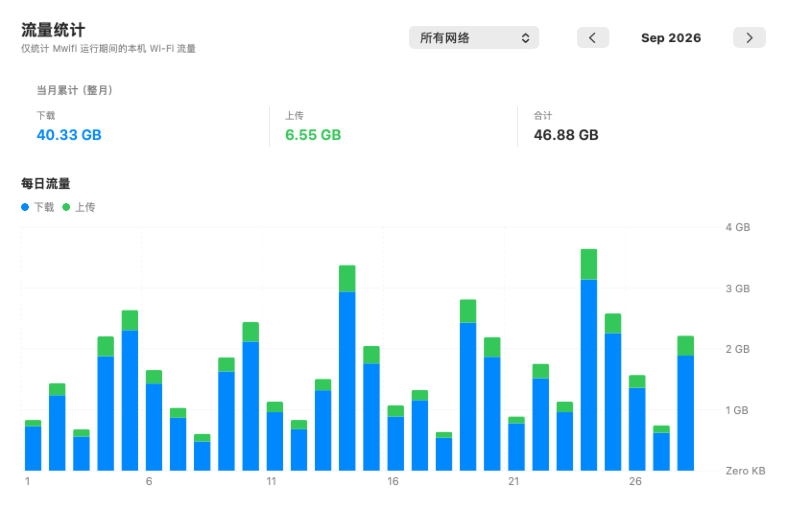

01 / 流量，看得明白
今天用了多少，
这个月也有数。
从此刻的上传下载，到每一天的流量变化。
按月份回看，或只看某一个 Wi-Fi，
让网络使用情况有迹可循。

每秒采样实时查看本机上传与下载速率
按网络回看支持月度汇总与每日流量图
保留 24 个月历史记录保存在本地 SQLite 数据库
仅统计 Mwifi 运行期间经过本机 Wi-Fi 的数据，不包含其他设备，也不等同于运营商套餐账单。
02 / 电量，不必惦记
还剩多少电，
抬眼就知道。
连接兼容的中兴 U30 Air，电量就出现在菜单栏。低电量和充电提醒，让你少打开一次设备后台。
电量功能适用于兼容 U30 Air 固件- 20% / 10%低电量提醒
- 默认两级阈值，可在菜单中调整。
- 60%充电提醒
- 每个充电周期首次达到时提醒一次。
- 30秒自动重试
- 读取失败后重新探测，连接成功后恢复定期检查。
03 / 开始使用
拖进去，就在菜单栏。
macOS 13 或更新版本
适用于 Apple Silicon Mac
- 01
下载并打开
前往 GitHub Release，下载 DMG 安装包并打开。
- 02
拖到应用程序
把 Mwifi.app 拖入 Applications。更新前先退出正在运行的旧版。
- 03
打开，授予权限
从应用程序启动，在系统提示时允许位置、本地网络和通知权限。
不是中兴 U30 Air，也能使用吗？
可以使用本机 Wi-Fi 网速与流量统计，包括手机热点和普通路由器。设备电量和充电提醒需要 U30 Air 的兼容本地接口，其他设备通常会显示“电量不可读取”。
我的网络和流量数据会上传吗？
应用不上传网络名称、设备状态或流量记录，也不包含广告、分析或遥测服务。流量记录保存在本机数据库，设备状态通过局域网读取。了解隐私说明。
为什么需要位置权限？
macOS 通过位置权限控制 Wi-Fi 名称的读取。Mwifi 使用网络名称进行分类和流量归属；未授权时，无法准确区分不同网络。
支持 Intel Mac 吗？
当前提供的安装包为 arm64，仅支持 Apple Silicon。最低系统要求为 macOS 13，暂不提供 Intel 安装包。
更新会清空已有的流量记录吗？
更新时先退出旧版，再替换应用即可。流量数据库单独保存在应用支持目录，替换应用不会主动删除这些记录。
给菜单栏，添一份明白。
Mwifi 1.5.4 · macOS 13+ · Apple Silicon
隐私说明
Mwifi 应用的数据保存在本机。本网站不设置分析、广告或追踪脚本，不读取你的网络信息；演示截图不包含真实使用记录。网站由 GitHub Pages 托管，GitHub 可能为安全目的记录访问 IP，详见 GitHub 隐私声明。